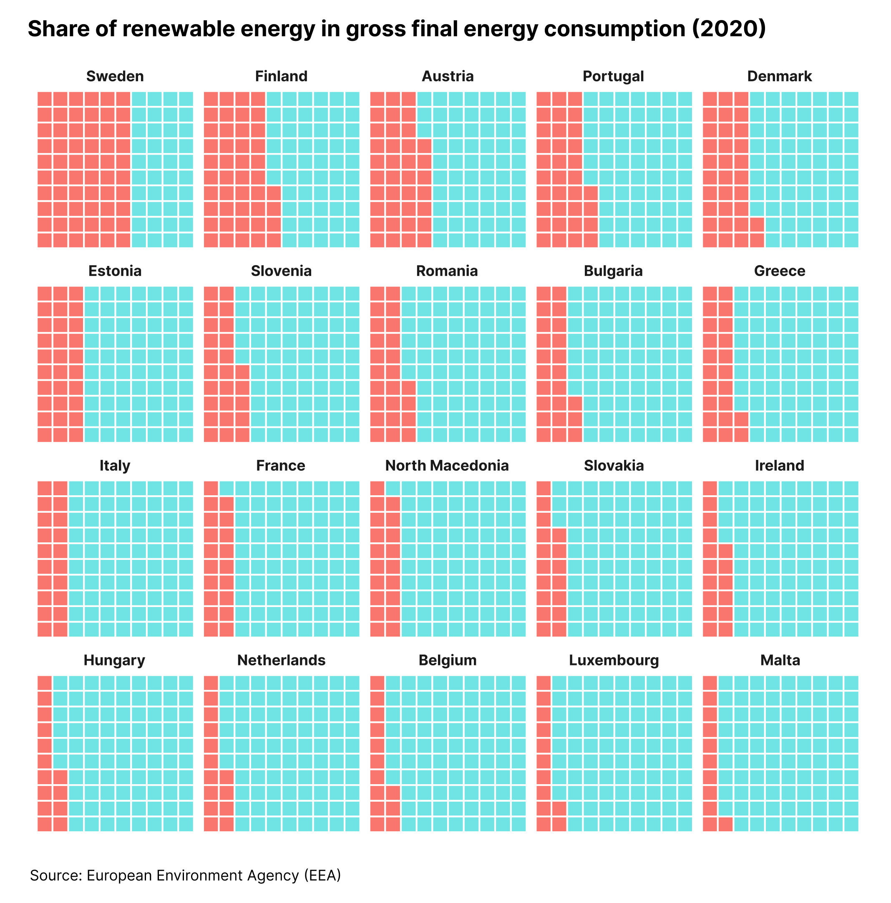
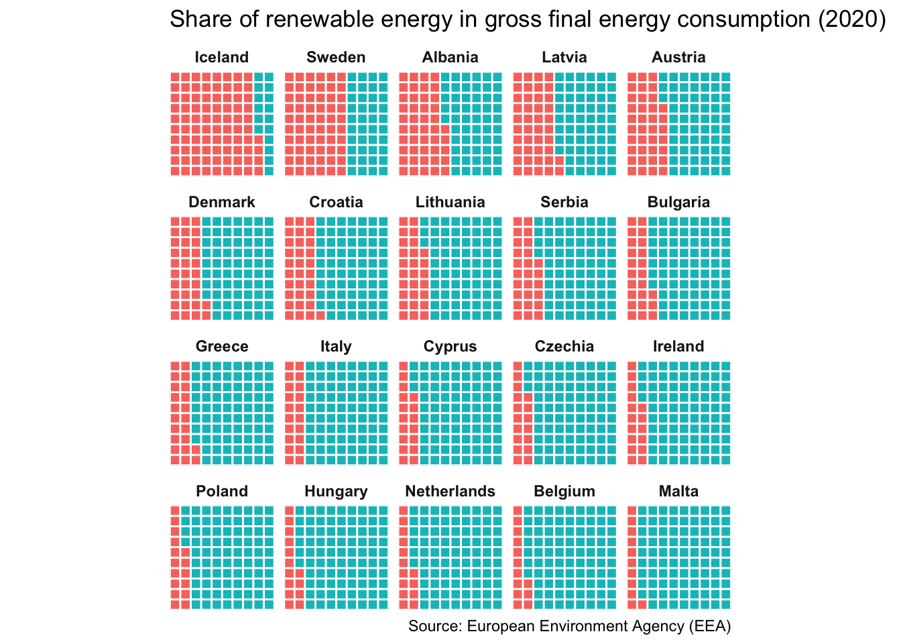

library(tidyverse)
library(readxl)
library(waffle)背景介绍
今天制作的是华夫饼图，灵感参照自 bydata 的 #30DayChartChallenge。
原始图片及使用 ggplot2 制图的最终效果如下：


包加载
导入数据
raw_data <- read_xlsx("sdg_07_40_page_spreadsheet.xlsx", sheet = 3, skip = 8, na = ":") 这里需要注意，原始数据中 missing data 使用 : 表示，因此需使用参数 na = ":" 将 : 转换成 NA 。
数据清洗
# 对原始数据进行数据清洗
clean_data <- raw_data %>%
# 过滤掉带有NA的行
drop_na() %>%
# 仅选择2020年的数据
select(Country = TIME, pct = `2020`) %>%
# 过滤掉国家名太长的国家（主要表示某个区域或者国家联盟）
filter(str_length(Country) <= 18) %>%
# 随机选择20个国家进行可视化
sample_n(20) %>%
mutate(pct = as.numeric(pct) %>% round(0)) %>%
# 按照比例从大到小排序
mutate(Country = fct_reorder(Country, -pct, sum)) %>%
mutate(reverse_pct = 100 - pct) %>%
pivot_longer(cols = pct:reverse_pct, names_to = 'type', values_to = 'value') %>%
mutate(value_pct = str_c(value, "%"))knitr::kable(head(clean_data))| Country | type | value | value_pct |
|---|---|---|---|
| Bulgaria | pct | 23 | 23% |
| Bulgaria | reverse_pct | 77 | 77% |
| Latvia | pct | 42 | 42% |
| Latvia | reverse_pct | 58 | 58% |
| Poland | pct | 16 | 16% |
| Poland | reverse_pct | 84 | 84% |
画图和调整
直接上代码：
waffle_plot <- clean_data %>%
ggplot(aes(fill = type, values = value)) +
geom_waffle(color = "white", size = 0.5, n_rows = 10) +
facet_wrap(~ Country, ncol= 5) +
# 横纵坐标轴的坐标和数值全部删除
scale_x_discrete(expand=c(0,0)) +
scale_y_discrete(expand=c(0,0)) +
guides(fill = 'none') +
# 横纵坐标比例相等，使得华夫饼图呈现为正方形
coord_equal() +
labs(
title = 'Share of renewable energy in gross final energy consumption (2020)',
caption = 'Source: European Environment Agency (EEA)'
) +
theme(
strip.background = element_blank(),
# 分面标题加粗
strip.text = element_text(face = 'bold'))# 输出ggplot制图结果
waffle_plot
经过 Figma 调整后的图片如下：
注意事项
如果遇到首次使用geom_waffle()函数报错，可以用如下方法解决：
remotes::install_github("hrbrmstr/waffle")关闭Rstudio后重新打开，问题解决